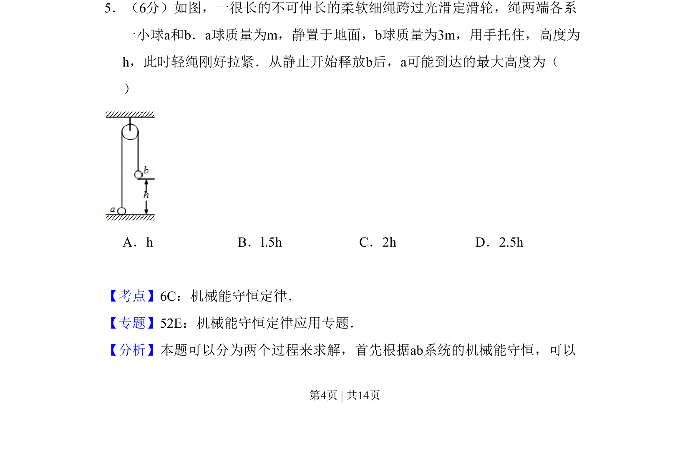
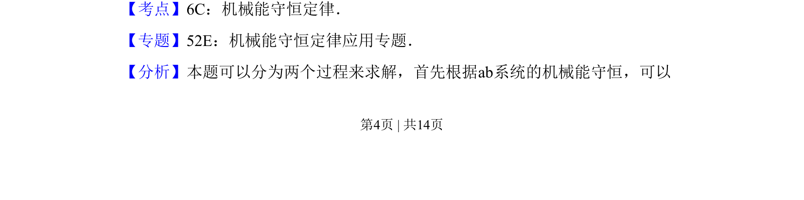
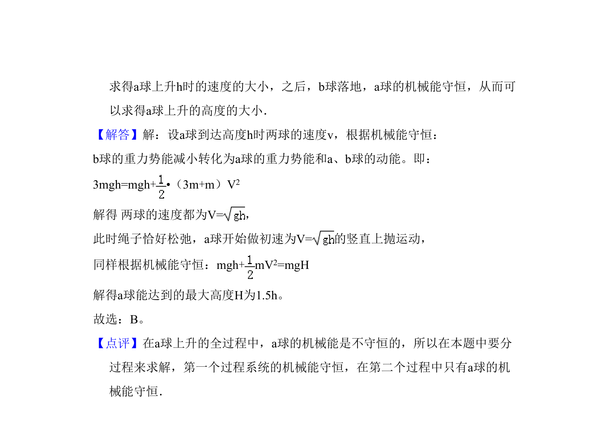

考点：机械能守恒定律 连接体 定滑轮
机械能守恒定律
连接体
定滑轮

一轻绳跨过定滑轮连接两球，b 球释放后通过机械能守恒定律分析 a 球能上升的最大高度。


📄 原 PDF 第 4 页：素材/真题/吉林/2008-2024·（吉林）物理高考真题/2008年高考物理试卷（全国卷Ⅱ）（解析卷）.pdf
素材/真题/吉林/2008-2024·（吉林）物理高考真题/2008年高考物理试卷（全国卷Ⅱ）（解析卷）.pdf